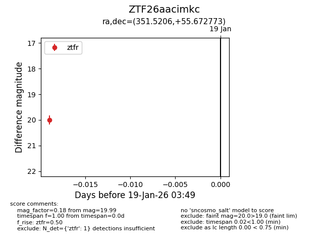
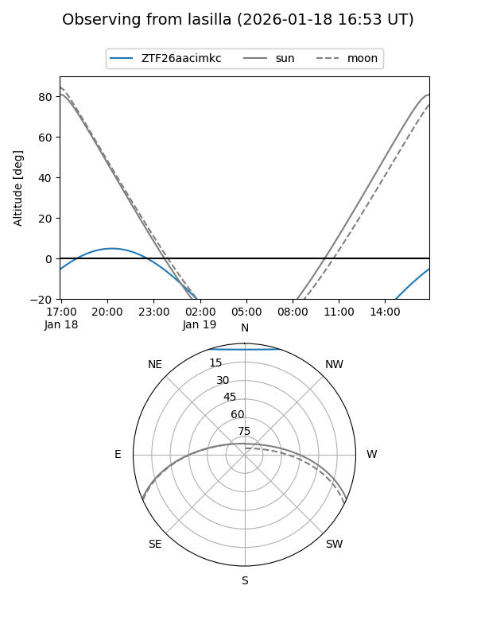
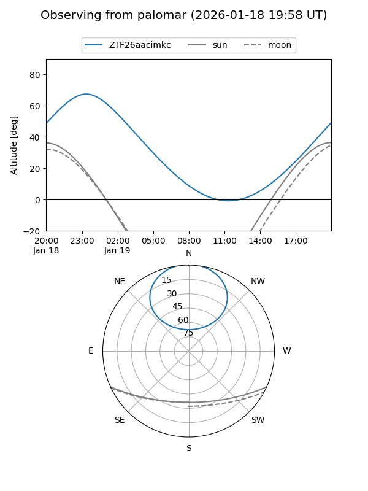

ZTF26aacimkc
Target ZTF26aacimkc at 2026-01-19 03:50
Aliases and brokers:
FINK: link
Lasair: link
ALeRCE: link
alt names
ZTF26aacimkc (ztf,fink_ztf)
Coordinates:
equatorial (ra, dec) = 351.5206,+55.67277
equatorial (HMS+DMS) = 23:26:04.94,+55:40:21.98
galactic (l, b) = (111.0407,-5.21589)
Flags:
Photometry:
last ztfr=19.99
1 ztfr detections
Lightcurve

Visibility


Additional plots